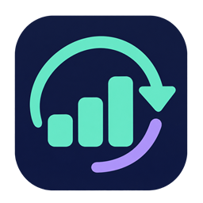

남은 사용량과 계정
이 PC에서 연결한 Codex 계정과 플랜, 남은 한도를 확인합니다. 주간 한도는 민트색, 다른 기간의 한도는 보라색으로 구분하고 접힌 화면에서도 같은 색을 유지합니다.

CODEX PULSE
BlueOcean의 첫 번째 서비스 · Windows 위젯
Codex의 남은 사용량을 %로 확인하고, 리셋 달력과 Google 일정을 함께 살펴보세요. 작게 띄워두고 필요한 순간에 확인하는 데스크톱 위젯입니다.
무료 배포 · Windows 10/11 64비트 · Codex 로그인 필요
화면 구성 예시 · 수치는 실제 계정 정보가 아닙니다.
AT A GLANCE
이 PC에서 연결한 Codex 계정과 플랜, 남은 한도를 확인합니다. 주간 한도는 민트색, 다른 기간의 한도는 보라색으로 구분하고 접힌 화면에서도 같은 색을 유지합니다.
내 계정의 다음 리셋 시각과 공개 기록을 달력에서 살펴봅니다. 리셋권은 만료가 빠른 순서로 표시하고, 계정과 사용 대상을 확인한 뒤 사용할 수 있습니다.
접기·펼치기, 상단 고정, 배경 불투명도, Windows 로그인 시 자동실행을 지원합니다. 글자와 조작 버튼은 선명하게 유지하고 작업표시줄 대신 트레이에 표시합니다.
OPTIONAL CONNECTION
Google에서 바꾼 일정은 위젯에 반영되고, 위젯에서 추가·수정·삭제한 일정은 Google 캘린더에 반영됩니다. Google 연결 없이도 Codex 사용량과 공개 리셋 달력을 사용할 수 있습니다.
개인정보처리방침에서 요청 권한, 저장 방식과 연결 해제 방법을 확인하세요.
최신 Windows 설치 파일을 받으세요. 필요한 .NET Desktop Runtime이 없으면 설치 프로그램이 다운로드와 설치를 진행합니다.
런타임 설치 시 관리자 승인이 필요할 수 있습니다. 최신 릴리즈와 변경 사항 ↗
GOOD TO KNOW
공개 설치 파일은 GitHub 계정 없이 다운로드할 수 있습니다. 설치 후 해당 PC의 Codex 프로그램에 로그인된 계정을 사용하며, 위젯 상단에서 현재 계정을 확인할 수 있습니다.
각 PC의 Codex에서 연결한 계정의 사용량을 가져옵니다. PC별로 로그인한 계정이 다르면 표시되는 계정과 사용량도 달라집니다. 창 위치·표시 설정과 캐시는 각 PC에 저장합니다.
공개 기록은 OpenTheRank에서 제공하는 제삼자 자료입니다. 내 계정에 리셋이나 리셋권 지급이 적용됐다는 확인은 아닙니다. 연결 계정에서 제공하는 다음 리셋 시각과 공개 기록은 구분해서 표시합니다.
새 버전이 있으면 위젯 제목 옆에 Update 버튼이 나타납니다. 버튼으로 업데이트하거나 최신 설치 파일을 실행할 수 있습니다. 이전 버전에서 Retry가 반복되면 위젯을 종료하고 최신 설치 파일로 업데이트하세요.
연결 해제는 이 PC의 Google 연결 정보와 메모리 캐시를 제거합니다. Google의 원본 일정은 삭제하지 않습니다. Google 계정에서 앱 접근 권한까지 철회하려면 서드 파티 연결 관리에서 제거하세요.
Codex Pulse는 BlueOcean에서 소개하는 BTL-LaserInnovation/CodexPulse 프로젝트의 비상업용 소프트웨어입니다. OpenAI 또는 Google의 공식 제품이 아닙니다. 외부 서비스의 계정·구독·네트워크 비용과 이용 조건은 별도로 적용됩니다.